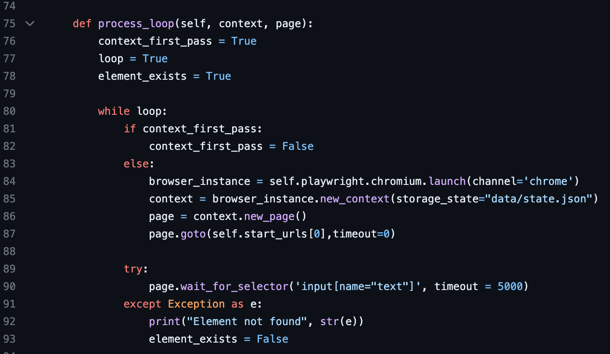
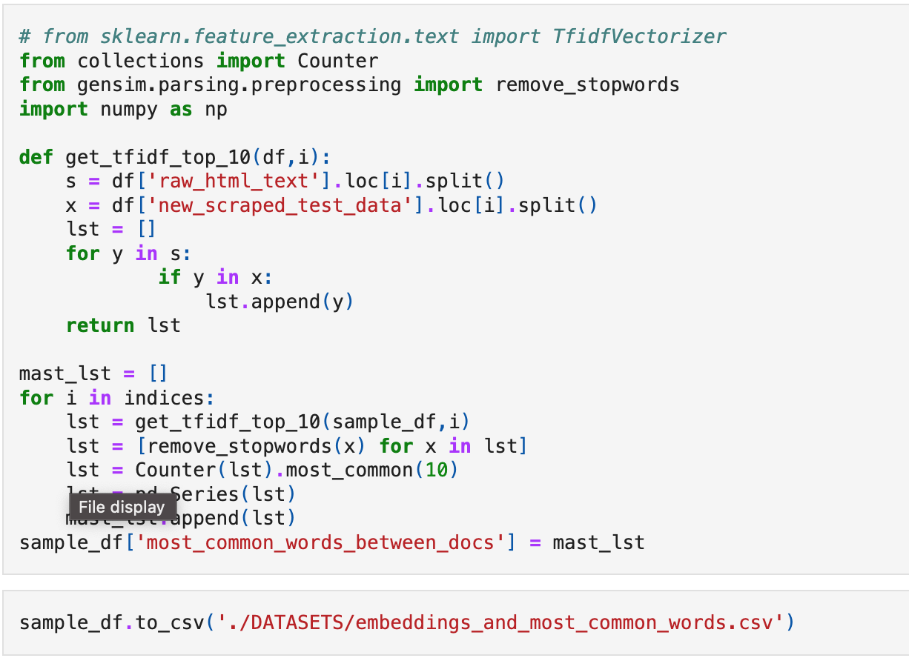

In my early 20s I became fascinated with investing
and that led me to excel/google sheets to analyze and optimize investment portfolios. From there
I realized how much more powerful I could make my analysis with an understanding of programming.
I downloaded a python bootcamp for $15, realized how much I love learning about analytics and predictive modelling,
left my sales job for one in SaaS and networked my way into an associate analyst position; all with the long term goal of mastering analytics and data science.
Fast forward a couple years of obsessively "beating on my craft" to quote Will Smith (still my hero despite the slap), and I now have the following on my resume:
- Core “Tiger Team” Lead optimization member tasked with automating SDR outreach
- Recent Company “Person of the Week” Recipient
- Frequent presenter at Podium’s Natural Language Processing group while it was active

This was a presentation I gave to the Natural Language Processing Group at my company regarding the history of
Natural Language Processing and a text processing library called SpaCy

This project was undertaken to build a stronger understanding of the playwright web driver with python.
I scraped every user that I followed on a social media account. This was to the end of gathering a large amount
of text data to run sentiment analysis with the LLM Roberta to aide in crypto-currency price prediction.

A web scraper and doc2vec project to identify company similarity based on website text data
I have included a requirements.txt file to give you dependent libraries and their versions so as
long as you have python downloaded you should be able to open this repo in your IDE and run
`pip install -r requirements.txt from the root level.Datasets are only small sample of original
in order to fit in github. Feel free to add larger list of urls to train the model to be more robust/accurate

This model aims to stack many crypto currency historical data as well as other correlated assets such as Gold, who have longer histories, and train a prediction model on them.
It utilizes yfinance, pandas, xgboost, scipy, matplotlib and seaborn to find correlated assets and stack them on top of each other to give the model more data to be exposed to due to the target asset (BTC) not having
a long history to draw from.